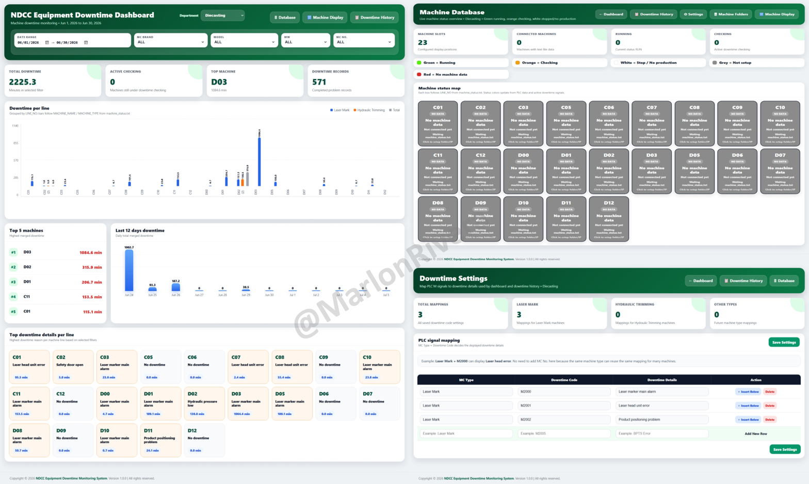

← Back to projects
Industry 4.0 • Cambodia • 2026
Smart Factory & OEE Monitoring System
PLC-integrated platform centralizing machine status, downtime history, OEE and production analytics.
Mitsubishi PLCPythonFastAPISQLREST APIIndustrial Networking

Responsibilities
System architecture, OEE design, PLC integration, production-data collection, Python development and database design.
What needed to be solved
Production data was distributed across departments with limited real-time visibility.
Engineering approach
Created centralized data collection and web dashboards for machine status, downtime and OEE monitoring.
Key outcomes
- Centralized visibility
- Real-time machine status
- Downtime history
- Faster engineering response